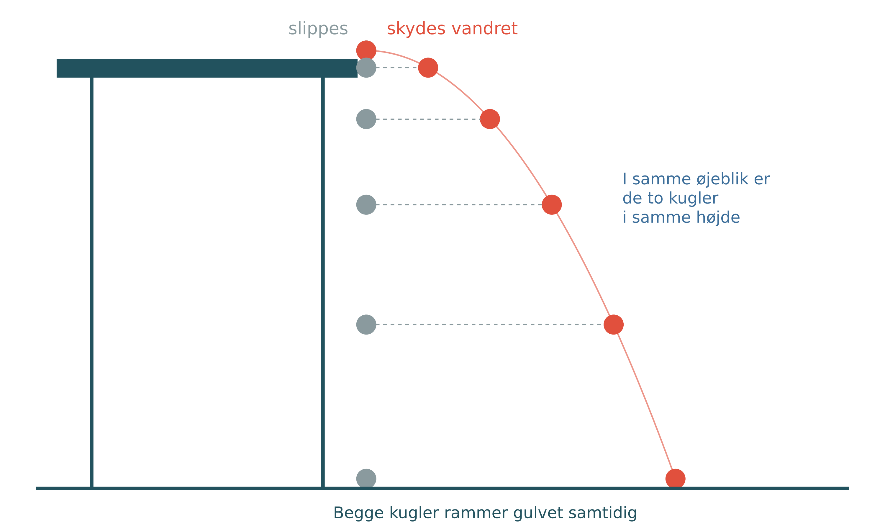
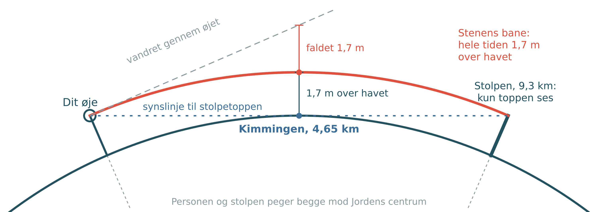
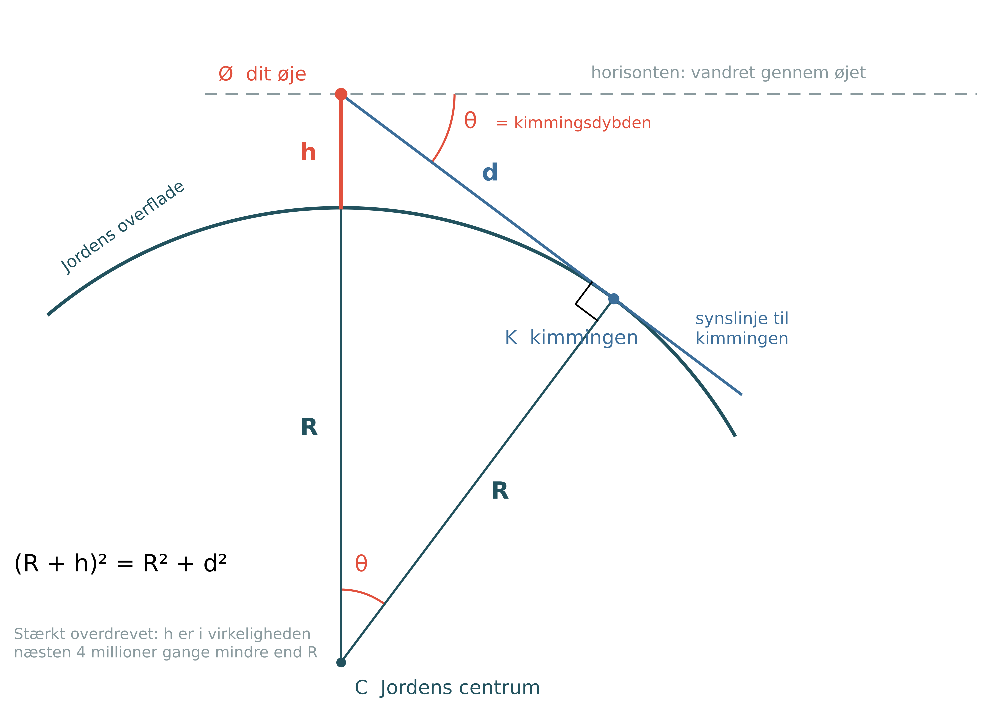
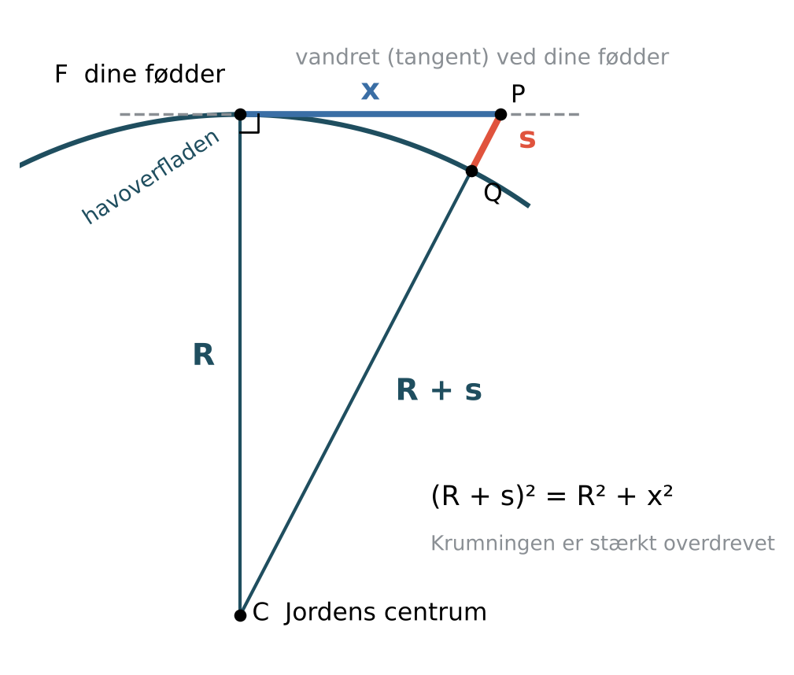
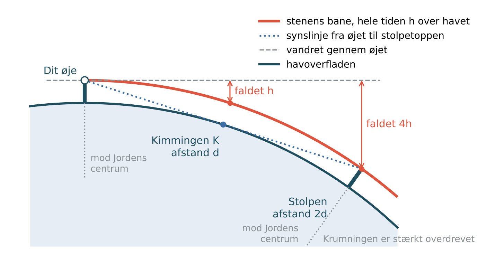

En satellit er en sten, der falder hele tiden – men aldrig rammer
Artiklen fra LMFK-bladet (2026) med bilag, opgaveark og facit. Med kun Galileos faldelov og Pythagoras finder eleverne, hvor hurtigt en satellit skal flyve – og opdager, at højden, man starter fra, forsvinder af resultatet. Nedenfor kan du selv skyde stenen afsted i 3D, lade Jorden dreje under banen og se Coriolis-kraften opstå.
Stenen skydes vandret afsted fra Djursland med 7,91 km/s og falder hele vejen rundt. Træk i billedet for at dreje det, og scroll eller knib for at zoome. Skift mellem at se banen fra rummet og fra den roterende jord.
banen i rummet banen set fra jorden sporet på jorden fart Coriolis-kraft
To små stålkugler ligger side om side ved kanten af et bord. I samme øjeblik som den ene skydes vandret ud over kanten, slippes den anden og falder lodret ned. De rammer gulvet samtidig; man hører kun ét klik. Mange fysiklærere har vist forsøget, og det overrasker eleverne hver gang.

Forsøget viser den indsigt, Galileo formulerede i Discorsi (1638): En vandret kastet genstand bevæger sig jævnt fremad og falder samtidig præcis som en genstand, der blot slippes. Den vandrette fart ændrer ikke ved faldet. Det er denne iagttagelse, sammen med at Jorden krummer, der ligger til grund for beregningen af en satellits fart.
Hvor hurtigt skal en satellit flyve for at holde sig i bane lige over Jordens overflade? Svaret, ca. 7,9 km/s, kan elever finde med kun to redskaber: Galileos faldelov \(s = \frac{1}{2}gt^{2}\) og Pythagoras’ sætning. Der er ikke brug for Newtons gravitationslov, centripetalacceleration eller differentialregning. Regnestykket kræver blot en strand, en kikkert og en stolpe ude på havet.
Undervejs sker der noget, som eleverne ikke venter: Den højde, man starter med, forsvinder af resultatet. Tilbage står \(v = \sqrt{gR}\), og dermed er man nået frem til Newtons berømte tankeeksperiment med kanonen på bjerget.
Da jeg underviste i fysik i 1.g, regnede vi satellitbaner på den sædvanlige måde: Man sætter tyngdekraften \(GMm/r^{2}\) lig med \(mv^{2}/r\) og isolerer \(v\). Eleverne fik det rigtige tal. Men mange troede bagefter stadig, at der ikke er tyngdekraft i rummet, og at astronauterne svæver, fordi de er kommet »ud over« tyngdekraften. Formlen giver svaret, men den viser ikke, hvad der sker.
Med Galileos faldelov er det omvendt. Her er faldet selve udgangspunktet: Stenen falder hele tiden, med den samme tyngdeacceleration som på stranden. Den rammer bare aldrig, fordi Jorden krummer sig væk under den. Når eleverne selv har regnet det ud, er det svært at bevare forestillingen om vægtløshed som fravær af tyngde. En satellit er i frit fald, og det er astronauterne indeni også.
Du står ved strandkanten med øjnene 1,7 m over vandet. Gennem en kikkert kan du lige se toppen af en stolpe ude på havet. Stolpen er også 1,7 m høj. Synslinjen fra dit øje til stolpetoppen strejfer havet ét sted, nemlig ved kimmingen. Fordi øjet og stolpetoppen er lige højt over havet, ligger kimmingen af symmetri præcis midt mellem jer (figur 2). Bemærk, at du og stolpen ikke står parallelt: I peger begge ind mod Jordens centrum.
Forestil dig nu, at du skyder en sten vandret afsted fra øjenhøjde. Når den når ud til kimmingen, har den faldet et stykke. Men havet ligger også lavere dér, fordi Jorden krummer. Hvis stenen når kimmingen på præcis den tid, det tager at falde 1,7 m, er havet krummet 1,7 m ned samtidig, og stenen er stadig 1,7 m over havet. Ude ved stolpen, dobbelt så langt væk, har stenen faldet 6,8 m, og havet er krummet 6,8 m ned. Stenen rammer toppen af stolpen.

Så kan det samme gentage sig ved næste stolpe og den næste, hele vejen rundt. Stenen er blevet en satellit. Vi ser bort fra luftmodstanden, som er næsten væk i rummet.
Faldtiden. Det lodrette fald afhænger ikke af den vandrette fart, som forsøget med de to kugler viser. Med \(h = 1,7\ \text{m}\) og \(g = 9,82\ \text{m/s}^{2}\):
\[t = \sqrt{\frac{2h}{g}} = \sqrt{\frac{2 \cdot 1,7\ \text{m}}{9,82\ \text{m/s}^{2}}} \approx 0,588\ \text{s}\]
Afstanden til kimmingen. Jordens centrum C, øjet Ø og kimmingspunktet K danner en retvinklet trekant, fordi synslinjen ØK tangerer Jorden i K. Pythagoras giver \((R + h)^{2} = R^{2} + d^{2}\), altså \(d^{2} = 2Rh + h^{2}\). Med \(R = 6371\ \text{km}\) er \(h^{2}\) forsvindende i forhold til \(2Rh\):
\[d \approx \sqrt{2Rh} = \sqrt{2 \cdot 6\, 371\, 000\ \text{m} \cdot 1,7\ \text{m}} \approx 4654\ \text{m}\]

Synslinjen rører havet i kimmingen K og står dér vinkelret på radius CK. Det er den rette vinkel, Pythagoras skal bruge. Af symmetri står stolpen lige så langt på den anden side af K, altså \(2d \approx 9,3\) km fra dig.
Kimming og horisont. I daglig tale bruges ordene om det samme, men i fysik, astronomi og navigation skelner man. Horisonten er det vandrette plan gennem øjet, den retning et vaterpas viser. Kimmingen er den linje, hvor himmel og hav ser ud til at mødes, altså der hvor synslinjen netop rører havoverfladen. Fordi Jorden krummer, ligger kimmingen en smule under horisonten. Vinklen \(\theta\) kaldes kimmingsdybden, og som figur 3 viser, er den lig med vinklen ved Jordens centrum: \(\theta \approx d/R = 4654/6\, 371\, 000 \approx 0,00073\) rad, ca. 2,5 bueminutter. Navigatører, der måler Solens højde over kimmingen med en sekstant, skal rette for netop denne vinkel. I praksis er den lidt mindre, fordi luften bøjer lyset.
Farten. Stenen skal nå 4,65 km på 0,588 s:
\[v = \frac{d}{t} = \frac{4654\ \text{m}}{0,588\ \text{s}} \approx 7910\ \text{m/s} \approx 7,9\ \text{km/s}\]
Det er ca. 28 500 km/t. En tur rundt om Jorden, \(2\pi R \approx 40\, 030\ \text{km}\), tager så ca. 5060 s eller 84 minutter. Den Internationale Rumstation, der flyver ca. 400 km oppe, hvor tyngden er lidt svagere, bruger ca. 92 minutter med ca. 7,7 km/s.
Kontrol ved stolpen. Ved stolpen, \(2d \approx 9,3\) km ude, er havet krummet \((2d)^{2}/(2R) = 4h \approx 6,8\) m ned, og stolpetoppen ligger \(4h\) under øjet. At falde \(4h\) tager tiden \(\sqrt{2 \cdot 4h/g} = 2t \approx 1,18\) s, og farten bliver \(2d/2t = d/t \approx 7,9\) km/s. Den samme fart: Stenen rammer toppen af alle stolper på 1,7 m langs vejen.
Sætter man bogstaver ind i stedet for tal, sker der noget smukt:
\[v = \frac{d}{t} = \frac{\sqrt{2Rh}}{\sqrt{2h/g}} = \sqrt{gR}\]
\(h\) går ud. Står man på en klint med øjnene 10 m oppe, falder stenen i 1,43 s, men kimmingen ligger også 11,3 km væk, og farten bliver den samme. Både tiden og afstanden vokser med \(\sqrt{h}\).
Det bliver endnu klarere, hvis man lader \(h\) være vilkårlig lille. På tiden \(t\) falder stenen \(\frac{1}{2}gt^{2}\). Samtidig er den nået afstanden \(vt\) ud, hvor jordoverfladen tæt på et punkt er krummet \((vt)^{2}/(2R)\) ned. Jorden er altså lokalt en parabel, ligesom stenens bane. Bliver stenen i samme højde, er de to parabler ens:
\[\frac{1}{2}gt^{2} = \frac{(vt)^{2}}{2R}\quad \Rightarrow \quad g = \frac{v^{2}}{R}\]
Det er formlen for centripetalaccelerationen, som Huygens og Newton fandt i 1600-tallet. Strandkanten giver altså en elementær udledning af \(a = v^{2}/R\), hvor tyngdeaccelerationen netop spiller rollen som centripetalacceleration.
To små forbehold kan nævnes for de skarpe elever. Den \(g\), vi måler i Danmark, er en anelse mindre end den rene tyngdekraft, fordi Jorden roterer, men forskellen er under en halv procent. Og en raket, der skydes mod øst fra Djursland, får Jordens rotation forærende: ca. 0,26 km/s.
Newton tegnede netop denne tanke: en kanon på et højt bjerg, der skyder kuglen hurtigere og hurtigere, indtil den falder hele vejen rundt om Jorden. Tegningen blev udgivet i 1728 i A Treatise of the System of the World. Det tog næsten 230 år, før Sputnik 1 gjorde det i praksis i 1957.
Newton tog også det næste skridt. Månen er ca. 60 jordradier borte. Hvis tyngden aftager med kvadratet på afstanden, er den der \(60^{2} = 3600\) gange svagere end ved jordoverfladen. På ét minut, altså 60 sekunder, skulle Månen da falde lige så langt mod Jorden, som et æble falder på ét sekund:
\[\frac{1}{2} \cdot \frac{9,82}{3600}\ \text{m/s}^{2} \cdot \left( 60\ \text{s} \right)^{2} = \frac{1}{2} \cdot 9,82\ \text{m/s}^{2} \cdot \left( 1\ \text{s} \right)^{2} \approx 4,9\ \text{m}\]
Månens bane bekræfter det. Med afstanden 384 400 km og omløbstiden 27,3 døgn er dens fart ca. 1,02 km/s, og \(v^{2}/r \approx 0,0027\ \text{m/s}^{2}\), præcis \(9,82/3600\). Den samme regel, som holder stenen i bane ved strandkanten, holder Månen i bane. Det var den indsigt, der gjorde æblet og Månen til ét problem.
Regnestykket kan bruges på flere niveauer:
En god diskussion til sidst: Hvorfor er astronauterne på ISS vægtløse, når tyngden deroppe stadig er ca. 90 % af tyngden på Jorden? Svaret er, at de falder hele tiden, præcis som stenen.
Regnestykket findes med tegning, eksempler og opgaver med svar i kapitlet om parablen i min lærebog Min matematikbog – Matematik for 9. og 10. klasse – fra ligning til sandsynlighed (2026, ISBN 9798142991270), der kan købes på Amazon som paperback og e-bog.
På mit websted mhgfysik.dk findes gratis, interaktive sider om fysik, kemi, matematik og astronomi, som kan bruges direkte i undervisningen.
Michael Howard Grant er lektor emeritus i fysik og matematik fra Grenaa Gymnasium og civilingeniør fra DTU. Han skriver fra Sostrup på Djursland og kan kontaktes på michael.h.grant@gmail.com.
I regnestykket ved strandkanten står Jorden stille. Det gør den ikke i virkeligheden. Mens stenen går én gang rundt på 84 minutter, drejer Jorden ca. 21° mod øst under den. Set fra rummet går stenen i en lukket bane gennem de samme stjernebilleder hver gang. Det er sporet på jorden under den, der flytter sig.
I animationen ovenfor kan du skifte mellem to synsvinkler:
Coriolis-kraften er en pseudokraft. Ingen ting trækker i stenen. Kraften dukker op i regnestykket, fordi vi selv drejer med Jorden. Pr. kilogram er den
\[\vec a_{\text{C}} = -2\,\vec\omega \times \vec v,\]
hvor \(\vec\omega\) er Jordens vinkelhastighed (\(7{,}29\cdot 10^{-5}\ \text{s}^{-1}\)) og \(\vec v\) er farten i forhold til jorden. Den står vinkelret på farten, så den ændrer kun retningen. På den nordlige halvkugle afbøjer den alt, der bevæger sig vandret, til højre. Skyder man nordpå, afbøjes kuglen mod øst. Skyder man sydpå, afbøjes den mod vest.
Den simple forklaring på det første: På Djursland flytter jordoverfladen sig mod øst med \(\omega R\cos 56{,}4^\circ \approx 0{,}26\) km/s. En sten, der skydes nordpå, har denne østlige fart med sig. Længere mod nord flytter jorden sig langsommere mod øst, så stenen kommer foran og lander øst for sigtet.
Prøv knapperne Østpå og Vestpå: Skydes stenen mod øst, får den Jordens rotation forærende og kommer højere op. Skydes den mod vest, mister den 0,26 km/s i forhold til rummet, er for langsom til at holde sig i bane og rammer jorden igen. Det er grunden til, at man sender raketter op mod øst, så tæt på ækvator som muligt.
Skru Jordens rotation op med skyderen Jordens rotation, så bliver afbøjningen tydeligere: Så har vi en planet, der snurrer hurtigere, og det er stadig god fysik. Sæt den til nul, og banen ligger fast på jorden, som i regnestykket ved stranden.
Coriolis-kraften har betydning for skud over lange afstande. For en kugle, der flyver vandret med farten \(v\) i tiden \(t\), giver den en afbøjning til siden på omtrent
\[y \approx \omega\sin\varphi\; v\,t^{2} = \omega\sin\varphi\,\frac{x^{2}}{v},\]
hvor \(x = vt\) er skudvidden og \(\varphi\) breddegraden. Afbøjningen vokser altså med kvadratet på skudvidden, ligesom havets krumning ved strandkanten.
Under belejringen af Paris i 1870–71 stod en del af de preussiske batterier syd for byen, bl.a. ved Châtillon, og skød nordpå ind over Paris. Kuglerne blev derfor afbøjet mod øst. Men på en skudvidde af 6–7 km og med en flyvetid på ca. 20 s bliver afbøjningen kun omkring 7 m. Det var langt mindre end spredningen mellem skuddene.
Det berømte eksempel er Paris-kanonen i 1918. Den tyske superkanon stod ved Crépy-en-Laonnois nær Laon, ca. 120 km nordøst for Paris, og skød mod sydvest. Granaterne var ca. 3 minutter undervejs og nåede over 40 km op i stratosfæren. Her bliver afbøjningen til højre (mod nordvest) ca. 1,2 km, og de tyske ballistikere måtte tage den med i deres skydetabeller. De regnede med netop de ligninger, Gaspard-Gustave de Coriolis havde offentliggjort i 1835. Hertil kommer, at granaten under op- og nedturen afbøjes mod vest, fordi Jordens rotationsakse har en komponent langs lodlinjen; et overslag uden luftmodstand giver et par hundrede meter mere.
Grå stiplet linje: kuglens vej, hvis Jorden ikke drejede. Rød: den virkelige vej set fra jorden, med afbøjningen tegnet forstørret.
I afsnittet Kontrol ved stolpen gik det hurtigt. Her er regnestykket udpenslet, så det kan bruges direkte i undervisningen, efterfulgt af et opgaveark med facit.
Læg en vandret linje hen over havet ved dine fødder F. Den tangerer Jorden i F og står derfor vinkelret på radius CF. Gå afstanden \(x\) ud ad linjen til punktet P. Hvor langt ligger havet under P? Kald afstanden \(s\).

Pythagoras giver
\[(R + s)^{2} = R^{2} + x^{2}\quad \Rightarrow \quad 2Rs + s^{2} = x^{2}.\]
Her er \(s\) nogle få meter og \(R\) over 6 millioner meter, så \(s^{2}\) er forsvindende i forhold til \(2Rs\):
\[s \approx \frac{x^{2}}{2R}.\]
Det er den samme trekant som i figur 3, blot læst den anden vej:
Øjet sidder \(h\) over havet ved dine fødder, og stolpetoppen sidder \(h\) over havet ved stolpen. De to \(h\)’er går ud med hinanden, så stolpetoppen ligger også \(4h\) under den vandrette linje gennem øjet. Det er de \(4h\), stenen skal falde.

Med \(h = 1,7\) m, \(R = 6\, 371\, 000\) m og \(g = 9,82\) m/s\(^{2}\):
| Afstand | i km | Havet krummet ned | Faldtid | Fart |
|---|---|---|---|---|
| \(d\) | 4,65 | \(h\) = 1,7 m | \(t\) = 0,588 s | 7,91 km/s |
| \(2d\) | 9,31 | \(4h\) = 6,8 m | \(2t\) = 1,177 s | 7,91 km/s |
| \(3d\) | 13,96 | \(9h\) = 15,3 m | \(3t\) = 1,765 s | 7,91 km/s |
| \(4d\) | 18,62 | \(16h\) = 27,2 m | \(4t\) = 2,354 s | 7,91 km/s |
En række regnet helt ud, afstanden \(3d\):
Hvorfor farten ikke ændrer sig. Er afstanden \(n\) gange større, krummer havet \(n^{2}\) gange mere ned. At falde \(n^{2}\) gange længere tager kun \(n\) gange længere tid, fordi faldet vokser med \(t^{2}\). Farten bliver
\[v = \frac{n\, d}{n\, t} = \frac{d}{t},\]
uanset \(n\). Kontrol: \(\sqrt{gR} = \sqrt{9,82\ \text{m/s}^{2} \cdot 6\, 371\, 000\ \text{m}} \approx 7910\) m/s.
Hvor overdrevet er tegningerne? Meget. I figur 4 og 5 er Jorden tegnet så lille, at krumningen kan ses. I figur 5 står personen og stolpen derfor tydeligt skævt i forhold til hinanden. Begge peger ind mod Jordens centrum. I virkeligheden er vinklen ved Jordens centrum mellem dig og kimmingen kun
\[\theta \approx \frac{d}{R} = \frac{4654\ \text{m}}{6\, 371\, 000\ \text{m}} \approx 0,00073\ \text{rad} \approx 2,5\ \text{bueminutter},\]
og mellem dig og stolpen det dobbelte, ca. 5 bueminutter eller \(\frac{1}{12}\) grad. Toppen af en 1,7 m høj stolpe hælder derfor kun \(1,7\ \text{m} \cdot 0,00146 \approx 2,5\) mm i forhold til en stolpe, der stod parallelt med dig. I figur 5 er vinklen tegnet ca. 36°, altså mere end 400 gange for stor. Havets fald på 6,8 m over 9,3 km svarer til en hældning, man aldrig ville kunne se med det blotte øje. Derfor ser havet fladt ud, selv om det ikke er det.
For de skarpe elever: Fordi lodlinjerne ikke er helt parallelle, og \(x\) er målt langs tangenten frem for langs den krumme overflade, er regnestykket en tilnærmelse. Fejlen er langt under en millimeter på 9 km.
Du skal kun bruge Galileos faldlov \(s = \frac{1}{2}gt^{2}\) og Pythagoras. Brug \(R = 6\, 371\, 000\) m og \(g = 9,82\) m/s\(^{2}\).
Opgave 1. Afstanden til kimmingen. Mål din egen øjenhøjde \(h\) i meter, eller brug \(h = 1,7\) m. Beregn afstanden til kimmingen: \(d = \sqrt{2Rh}\).
Opgave 2. Faldtiden. Hvor lang tid tager det en sten at falde højden \(h\)? Brug \(t = \sqrt{2h/g}\).
Opgave 3. Farten. Stenen skal nå ud til kimmingen på netop den tid, det tager at falde \(h\). Beregn \(v = d/t\) i m/s og i km/t.
Opgave 4. Udfyld tabellen. Havet krummer \(s = x^{2}/(2R)\) ned i afstanden \(x\). Find faldtiden for netop det fald, og beregn farten \(x\) divideret med faldtiden.
| Afstand | i meter | Havet krummet ned | Faldtid | Fart |
|---|---|---|---|---|
| \(d\) | ||||
| \(2d\) | ||||
| \(3d\) | ||||
| \(4d\) |
Opgave 5. Hvad ser du? Hvad lægger du mærke til i kolonnen med farten? Sammenlign tallene i kolonnen Havet krummet ned med \(h\), og faldtiderne med \(t\). Kan du forklare mønstret?
Opgave 6. På en klint. Gentag opgave 1–3 med øjnene 10 m over havet. Hvad sker der med afstanden, med faldtiden og med farten?
Opgave 7. En tur rundt om Jorden. Jordens omkreds er \(2\pi R\). Hvor lang tid tager en tur rundt med den fart, du fandt? Sammenlign med ISS, som bruger ca. 92 minutter.
Ekstraopgaver for de hurtige.
Hvor hurtigt skal en satellit flyve lige over Månens overflade? Brug \(g = 1,62\) m/s\(^{2}\) og \(R = 1737\) km.
Og over Mars? Brug \(g = 3,71\) m/s\(^{2}\) og \(R = 3390\) km.
Astronauterne på ISS er vægtløse, selv om tyngden deroppe stadig er ca. 90 % af tyngden på Jorden. Hvorfor?
Opgave 1. \(d = \sqrt{2 \cdot 6\, 371\, 000\ \text{m} \cdot 1,7\ \text{m}} = \sqrt{21\, 661\, 400\ \text{m}^{2}} \approx 4654\) m \(\approx 4,65\) km.
Opgave 2. \(t = \sqrt{2 \cdot 1,7\ \text{m}/9,82\ \text{m/s}^{2}} = \sqrt{0,3462\ \text{s}^{2}} \approx 0,588\) s.
Opgave 3. \(v = 4654\ \text{m}/0,588\ \text{s} \approx 7910\) m/s \(\approx 7,9\) km/s \(\approx 28\, 500\) km/t.
Opgave 4.
| Afstand | i meter | Havet krummet ned | Faldtid | Fart |
|---|---|---|---|---|
| \(d\) | 4654 | 1,7 m | 0,588 s | 7910 m/s |
| \(2d\) | 9308 | 6,8 m | 1,177 s | 7910 m/s |
| \(3d\) | 13 963 | 15,3 m | 1,765 s | 7910 m/s |
| \(4d\) | 18 617 | 27,2 m | 2,354 s | 7910 m/s |
Opgave 5. Farten er den samme i alle rækker. Faldene er \(h\), \(4h\), \(9h\) og \(16h\), altså \(1^{2}\), \(2^{2}\), \(3^{2}\) og \(4^{2}\) gange \(h\), mens faldtiderne er \(t\), \(2t\), \(3t\) og \(4t\). Både fald og krumning vokser med kvadratet på afstanden, så stenen holder sig hele tiden \(h\) over havet. Farten er \(\sqrt{gR}\).
Opgave 6. \(d = \sqrt{2 \cdot 6\, 371\, 000 \cdot 10}\ \text{m} \approx 11\, 288\) m og \(t = \sqrt{2 \cdot 10/9,82}\ \text{s} \approx 1,427\) s. Både afstand og tid bliver større, men farten er stadig \(11\, 288/1,427 \approx 7910\) m/s. Højden går ud af regnestykket.
Opgave 7. \(2\pi R \approx 40\, 030\) km. Tiden er \(40\, 030\ \text{km}/7,91\ \text{km/s} \approx 5060\) s \(\approx 84\) minutter. ISS flyver ca. 400 km oppe, hvor tyngden er lidt svagere, og bruger derfor lidt længere tid.
Ekstraopgaver.
Månen: \(v = \sqrt{1,62 \cdot 1\, 737\, 000}\ \text{m/s} \approx 1680\) m/s \(\approx 1,7\) km/s.
Mars: \(v = \sqrt{3,71 \cdot 3\, 390\, 000}\ \text{m/s} \approx 3550\) m/s \(\approx 3,5\) km/s.
Astronauterne og rumstationen falder hele tiden, præcis som stenen. Alt omkring dem falder med samme acceleration, så intet presser mod gulvet. Vægtløshed er frit fald, ikke fravær af tyngde.